WHAT'S NEW IN AVENGERLAND
2015
January 1st – Geoff Dodd
JASON KING: A
Deadly Line in Digits (Jeremy
Summers, 1971)
11 Victoria Street, St. Albans -

2014
30th December – An excellent find for the end of the year from Geoff Dodd, two birds with one very well aimed stone.
THE
PERSUADERS!:
title sequence
Hotel Alba
Caracas, Venezuela - Danny
Wilde's interests in buildings is illustrated.
(Identified by Geoff Dodd, December 2014)

JASON KING:
A Kiss For A Beautiful
Killer (Cyril Frankel,
1971)
Hotel Alba
Caracas, Venezuela -.
(Identified by Geoff Dodd, December 2014)

11th December – Paris is certailny in vogue this month. Geoff Dodd has just sent in this location from JASON KING.
JASON KING:
Buried in the Cold
Cold Ground (Jeremy Summers:
January 1971)
Boulevard Saint
Germain, Paris (from the Place
Henri Mondor) -
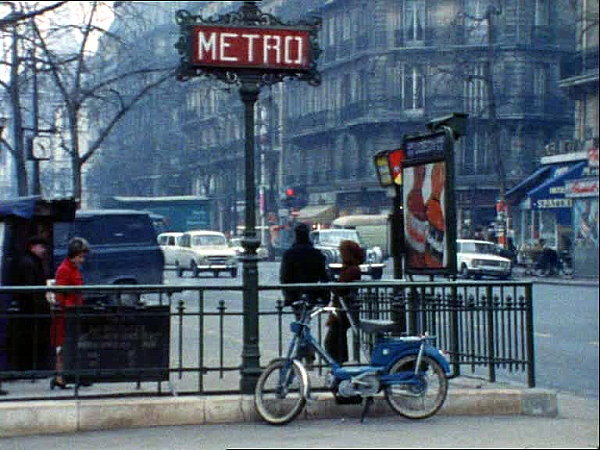

11th December – Another continental location spotted by Pierre Alfonsi, Again, quite a tricky location, Pierre managed to track down the cable car company!
DEPARTMENT S:
The Ghost of Mary
Burnham (Cyril Frankel : 1968)
Sils im
Engadin/Segl in Switzerland
- Sir Curtis and Stewart Sullivan discuss the Mary Burnham case in a
cable car
at an Alpine ski resort.


9th December – Another great find from Pierre Alfonsi, this was even trickier as it is a narrow road off the main roads.
THE SAINT:
The Covetous Headsman
(Michael Truman: 1962)
30 rue La Pérouse
75116 Paris, France
– Simon escorts the grieving Valerie North as Inspector Quercy drives
them to their hotel. They turn into Rue de Coleze, but they have been
followed
from the airport by Kaplan and Mario.
(Identified by Pierre Alfonsi, December 2014)

6th December – Another old chestnut put to bed. Pierre Alfonsi, has identified the Venetian road driven along by Simon Templar, posing as an ambitious chauffer. Not a bad find considering all the trees obscuring the view.
THE SAINT:
The Damsel in Distress
(Peter Yates: Aug/Sep 1964)
158 boulevard
Haussmann 75008 Paris, France
- Barbara Astral takes the opportunity to talk to the new driver,
Sebastian, as
they begin their journey back to Vila Di Milo.
(Identified by Pierre Alfonsi, December 2014)
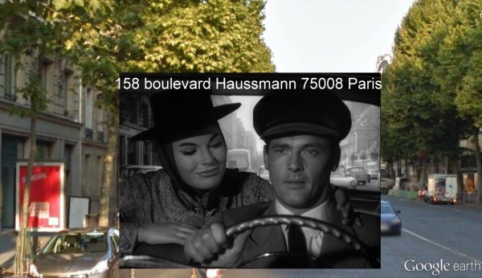
5th December – Paul Stroud – more DANGER MAN spots – will update soon
DANGER MAN:
The Trap
(Pennigton Richards: August 1960)
Parliament (2:15)
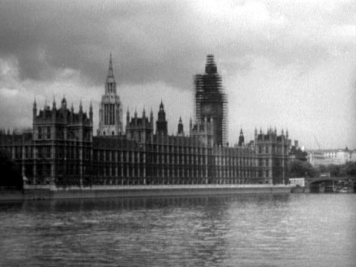
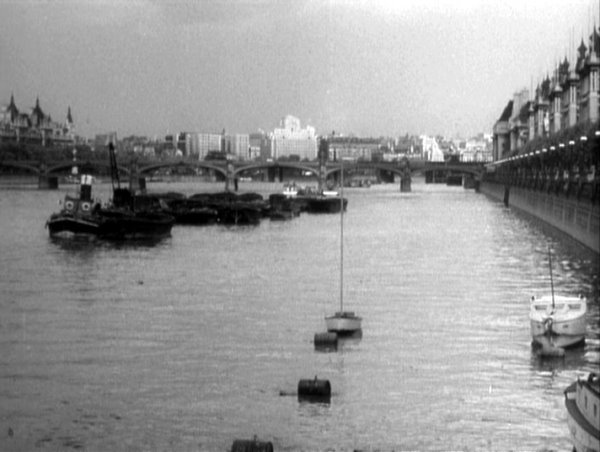
Doge's Palace, Venice (5:33)
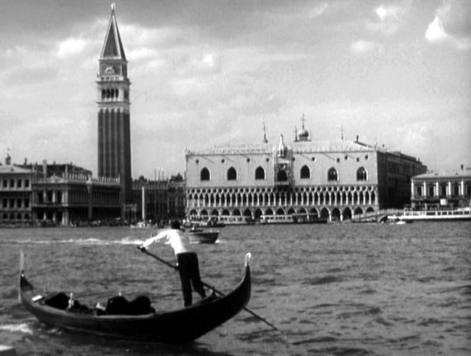
Santa Maria della Salute, Venice (12:00)
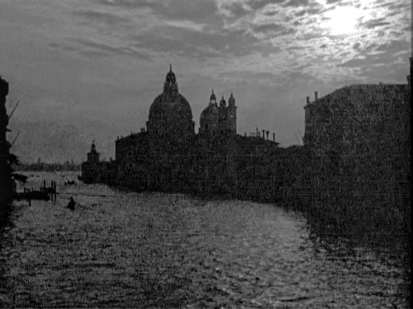
Rialto Bridge, Venice (13:15)
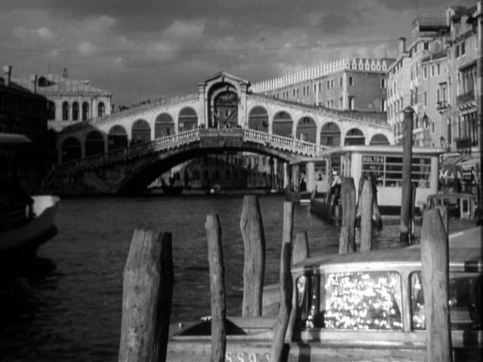
DANGER MAN:
The Actor
(Michael Truman, 1960)
Hing Wai Building 0:00, 8:35
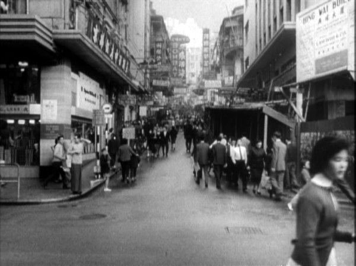
36 Queen's Road Central, Hong Kong
Looking up D'Aguilar St. Assuming the building hasn’t moved, it’s
unrecognisable
now, but if you follow the map up the hill you find boxes like these,
as you
can see on the horizon.
1st December –
Another location we have had on
the books from GIDEON’S
WAY:
The Great Plane Robbery.The
only clue to
this pub we had was “Pem”, Alan Field had
suggested a
number of possibilities, but it was Dean Wheeler
who finally came
up with the goods.with this excellent confirmation photo of St
Augustine's
Church in Kilburn Park Road. Thanks DeGIDEON’S
WAY: The
Great Plane Robbery
(Leslie Norman: March-April 1965)
Kilburn Park
Road, NW6 – The
real van of Gold passes a pub (Pembroke, 48 Kilburn Park
Road, demolished
1975) on the way to the garage.
(Identified by Dean Wheeler, November 2014)
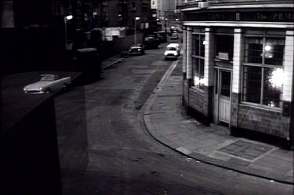
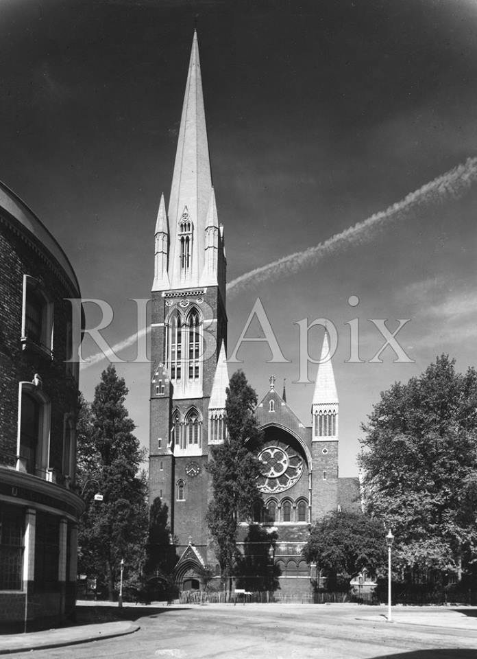
22nd November – More Danger Man international locations from Paul Stroud
roud
DANGER MAN: Vacation
JFK Airport, New York 0.03 - Drake departs for a holiday
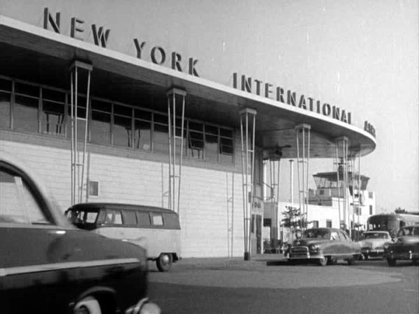
Nice 3:02 - Drake, on holiday, arrives in Nice
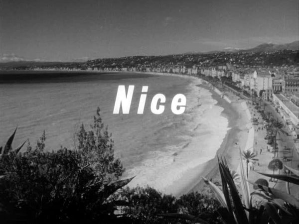
Avenue Bella Vista, Beaulieu-sur-Mer (7:00) - Drake's side of the car
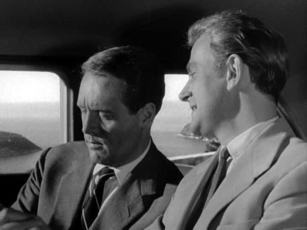
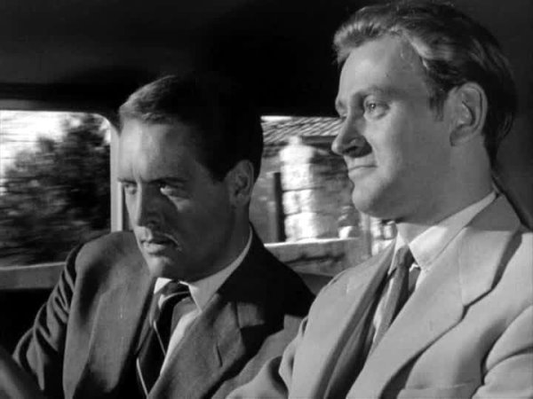

Avenue de Verdun, Eze - Georges' side of the car - Believing
Drake to be an
assassin, Georges drives him to Baron's house to await instructions.
These are the same views as seen in An Affair of
State. Seeing more to the left this time,
including a glimpse of Cap
Ferrat opposite Mont Boron, locates the view from Drake's side of the
car. The
driver’s side doesn’t get as far as the viaduct this time.
DANGER MAN:
Two Birds with One
Bullet
Bogota, Colombia (40:40) - Bogotazo riot in 1948 (reversed at 1:32,
then
correct way around but less clear at 1:46) -
https://www.youtube.com/watch?v=WxX5FrS_7qQ
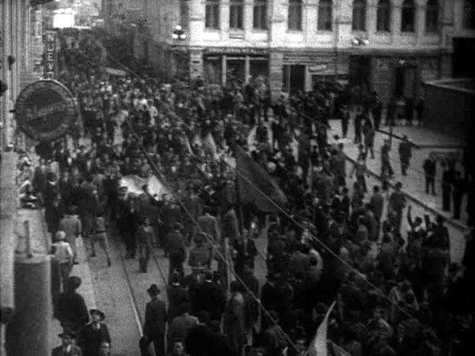
22nd November – Another of those RANDALL AND HOPKIRK [DECEASED] locations that has eluded us for years has been identified by Michelle Clarke. Well done Michelle!
RANDALL AND
HOPKIRK [DECEASED]: Money to Burn
(Ray Austin: January 1969)
Edbury Mews, SW1
- Elizabeth Saxon
sets off in her Triumph with Kevin O'Malley and Marty aboard to chase
after
Anne-Marie Benson and Angela Kendon who have stolen O'Malley's car from
the
Club 70.
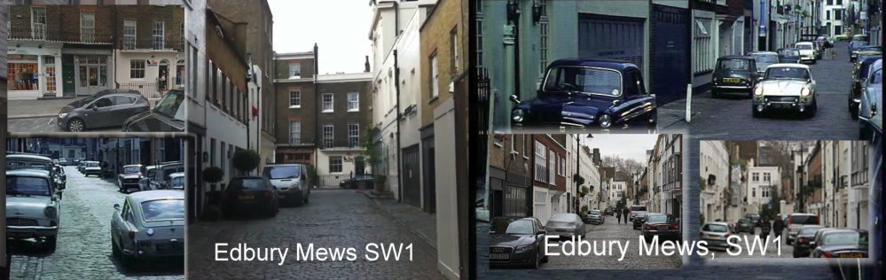
16th November – Geoff Dodd has done some excellent detective work to find this long-missing location.
THE SAINT:
The Smart Detective
(John Moxey: February 1965)
N6: London Road, Shenley, near
the junction with Pound
Lane - Swann and Miller are manning a check point
near Maidenhead and
call Peter Corrio when Templar’s Volvo passes.
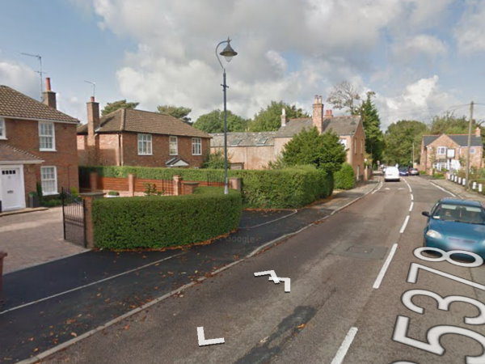

15th November – Thanks to Ivor Williams for this great shot of Best Western Hotel Frensham Pond which shows how little it has changed since it appeared in JOURNEY TO THE UNKNOWN: Somewhere In A Crowd.
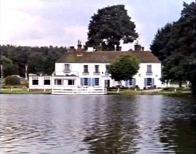
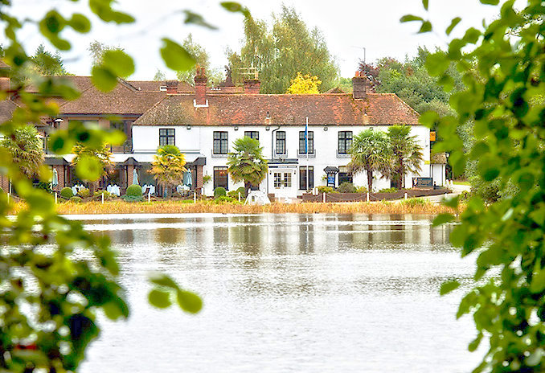
11th November - Paul Stroud has found some footage used in DANGER MAN: The Gallows Tree
DANGER MAN: The Gallows Tree (Michael Truman: 1959)
Braemar Highland Games (4:47)
Clips from British Pathé
1959 - Title shot and tossing the caber at 1:14
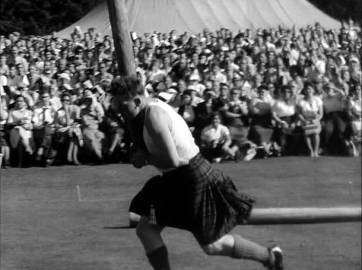
https://www.youtube.com/watch?v=vAWuKFcfJ5U
1958 - Tug-o-war from 0:49
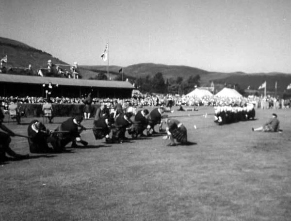
https://www.youtube.com/watch?v=6qn6FeVa4-g
7th November - From Paul Stroud another great set of international finds.
DANGER MAN:
Hired Assassin (Charles
Frend: 1960)
The map at 11:32 is Madrid.
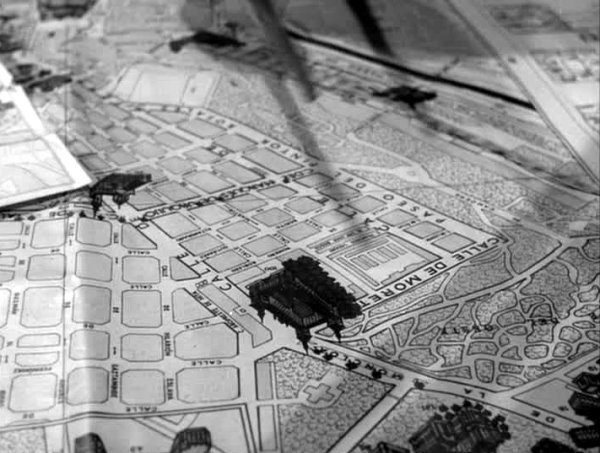
DANGER MAN:
Hired Assassin (Charles
Frend: 1960)
The sunset (18:57) is of Athens.
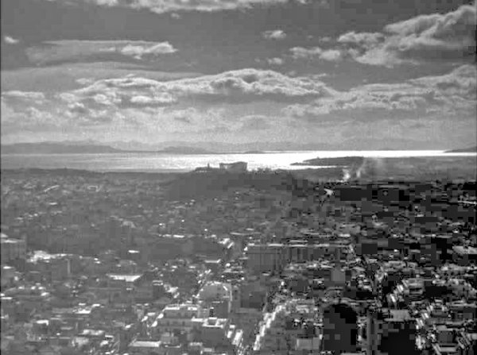
DANGER MAN: I
Can Only Offer You Sherry
(George Pollock: November, 1965)
Ahmed Pasha Karamanli Mosque, Tripoli (03:08, 22:24)
http://www.panoramio.com/photo/274576


DANGER MAN: I
Can Only Offer You Sherry
(George Pollock: November, 1965)
Port Said Street, Cairo (14:22), Pan finishing on Sayyeda
Zeinab mosque.
http://www.panoramio.com/photo/3319955
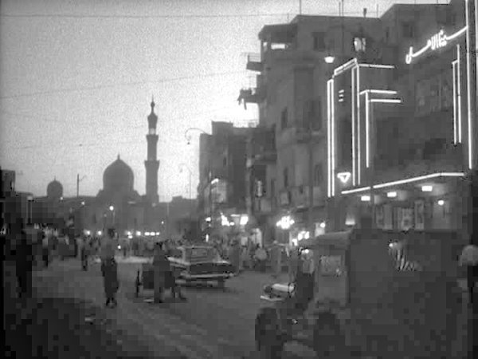
DANGER MAN: I
Can Only Offer You Sherry
(George Pollock: November, 1965)
Myrtle Bank Hotel, Kingston - Ma Suud’s house
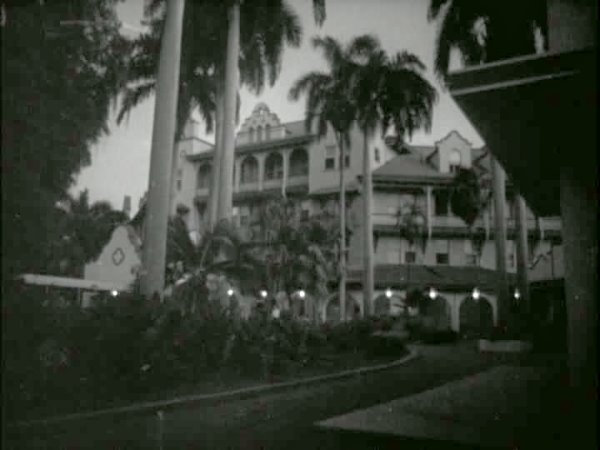
3rd November – A great find from Geoff Dodd, quite a distinctive house hidden in plain view.
I've been mulling this one over for some time and I can't remember if I've mentioned it before but I'm 95% sure on this one - the house is called 'The Kiln' and it's on the junction with Old Redding and Common Road, Stanmore. As you can see, it's now 50% bigger than at the time of filming but this was actually the original layout of the building as I found an entry online saying that the wing to the right was pulled down in the late 50's (http://www.british-history.ac.uk/report.aspx?compid=22464 , para. 49) but obviously it's now been rebuilt. A lot of things match - the design of the windows, the position of the chimney stacks on the left wing in particular (one chimney pot to the rear of the front stack and two on the one at the rear), the position of the drainpipe down the side to the left near the two windows and the design of the roof of the left wing. Obviously the roof design differs behind what is now the entrance but that would have changed during the rebuild. The house was owned by the Blackwell family of Crosse & Blackwell fame and obviously it's right on the doorstep of other locations used in both episodes.

GIDEON’S WAY:
The Big Fix
(James Hill: September 1964)
P14: The Kiln, Old Redding,
Stanmore - Posing as
a friend of Janet Middleton (Penelope Horner), Detective Inspector
David Keen
(Alexander Davion) arrives at the Middleton residence.


THE SAINT:
The Fiction Makers
(Roy Baker: May 1966)
P14: The Kiln, Old Redding,
Stanmore - Simon
Templer (Roger Moore) arrives in his Volvo at the home of Amos Klein.
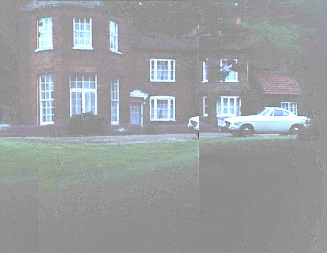
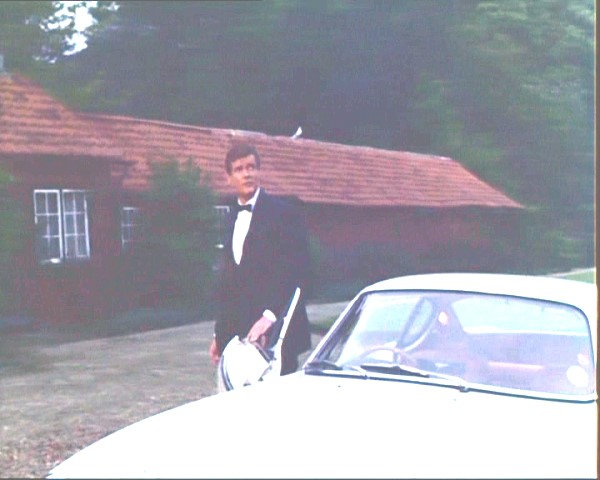
25th October - Ron Geddes has been up to Edinburgh to take some excellent photos of locations form THE PROTECTORS episode Shadbolt. Thanks Ron for sending in such great comparison shots.
Holyrood Park -
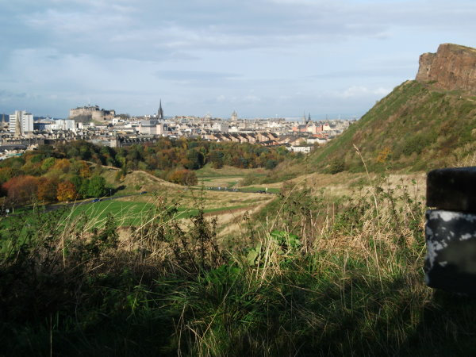
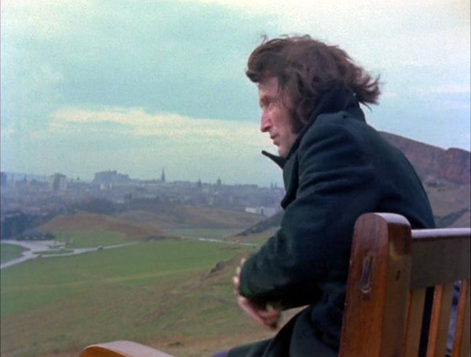
South Learmonth Avenue with Fettes College -
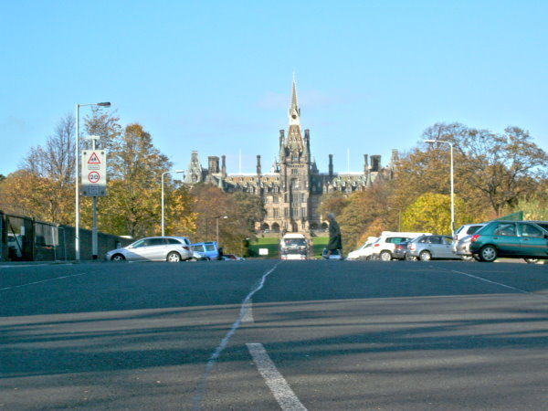
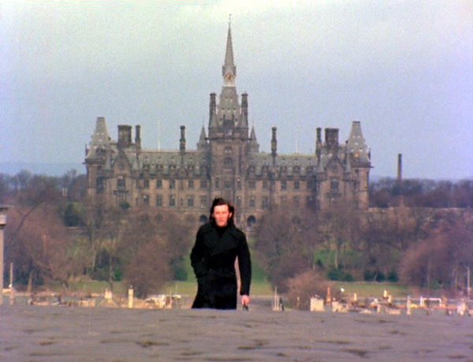
Melville Street -
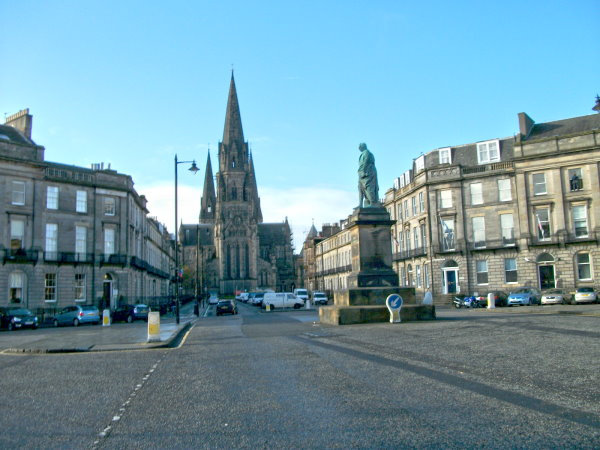
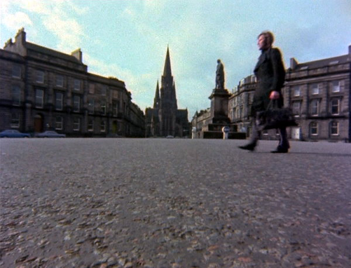
Horse Wynd -
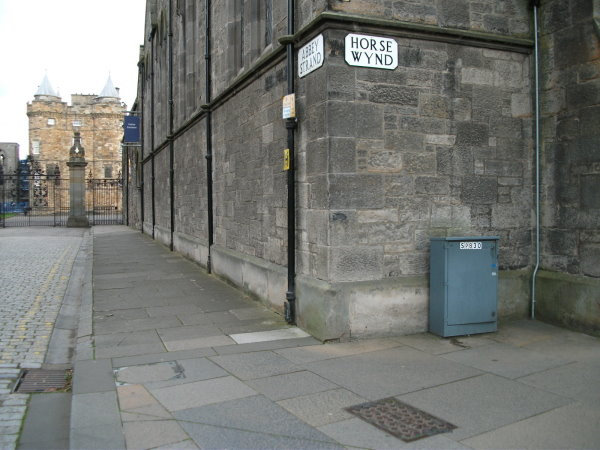
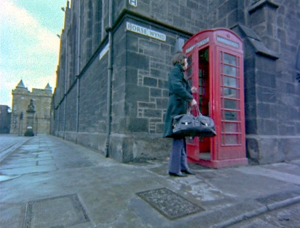
The Vennel -
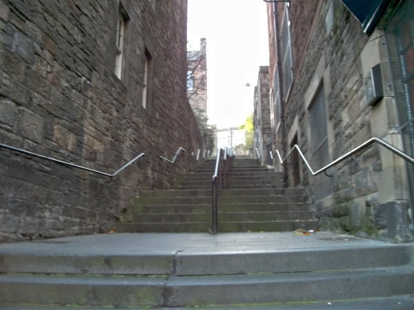
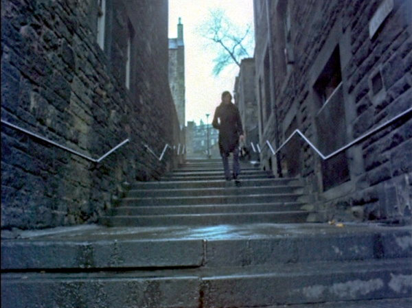
Grassmarket -
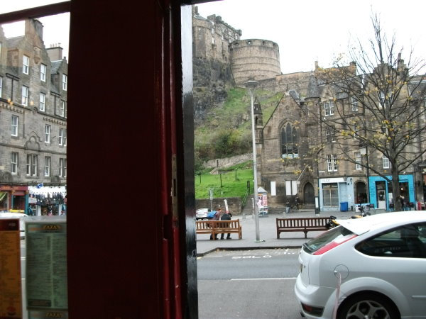
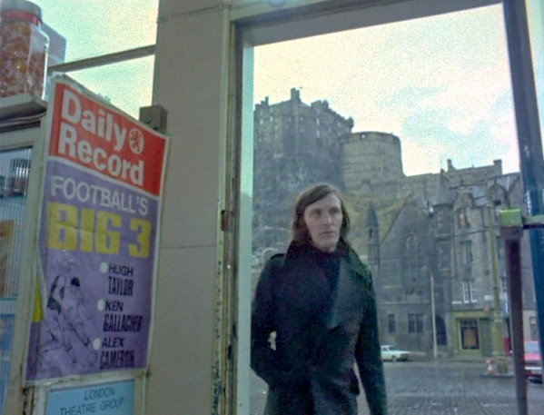
Calton New Burial Ground -
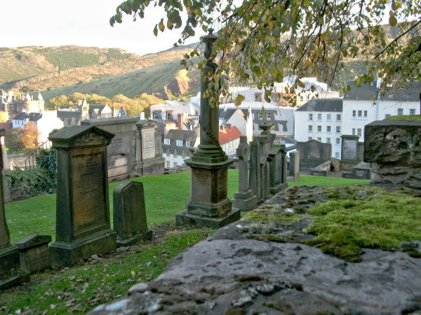
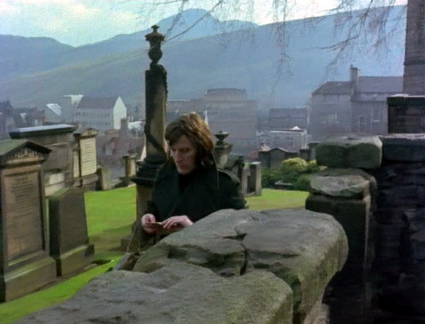
Waverley Station -
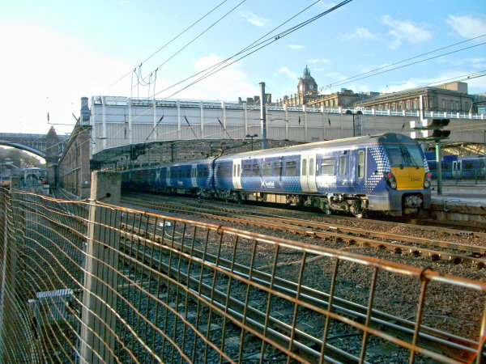
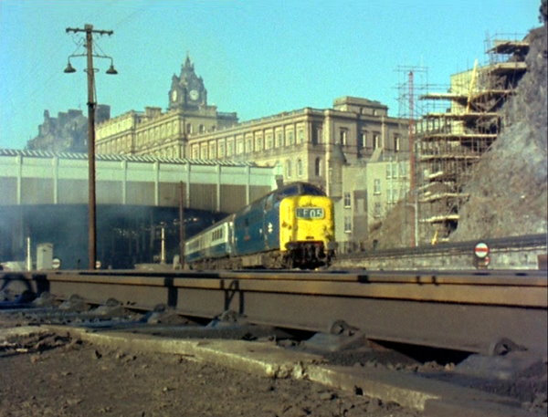
24th October – More fantastic finds from Paul Stroud.
PERSUADERS!:
Someone Like Me
(Roy Ward Baker 1971)
As he is driving to a bar, Danny Wilde becomes aware that a car is
following
him.
Broadway,SW1 - First, looking along Broadway as the cars come out of St Ermin's Hill towards the camera past New Scotland Yard.
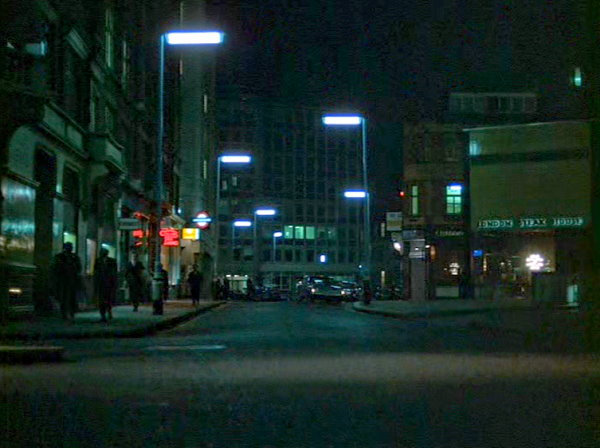
Tothill Street , SW1 - Along Tothill Street with Westminster Abbey, no less, in the background, turning around number 33 into Dean Farrar Street.
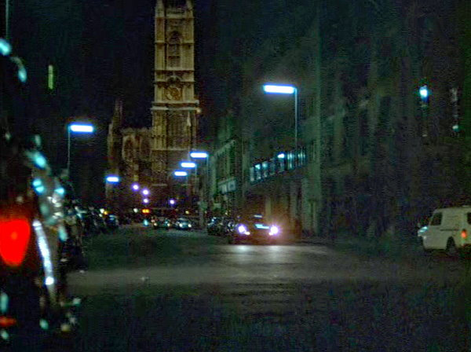
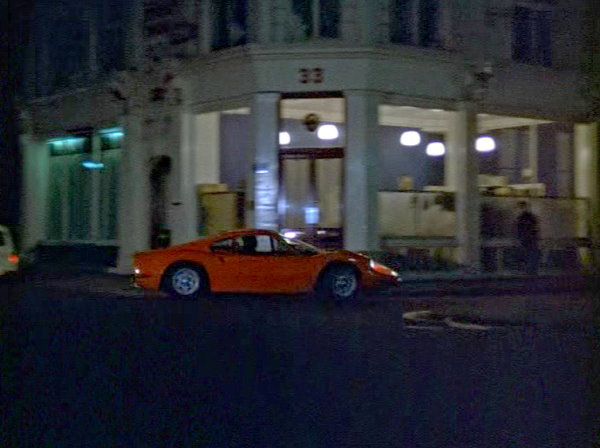
Broadway,SW1 - Then back the other way on Broadway, around the station.
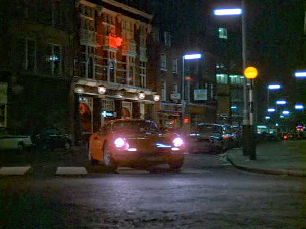
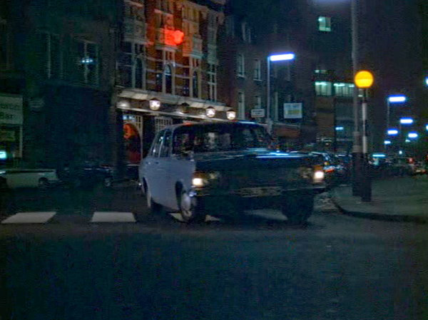
DANGER MAN:
Someone is Liable to
Get Hurt (Michael Truman:
October 1965)
Myrtle Bank Hotel, Kingston, Jamaica - Drake is invited to meet Magda
Kallai at
the Villa Kiskadee
DANGER MAN:
The Honeymooners
(Charles Frend: 1960)
Hong Kong Harbour, Hong Kong - Banton by day
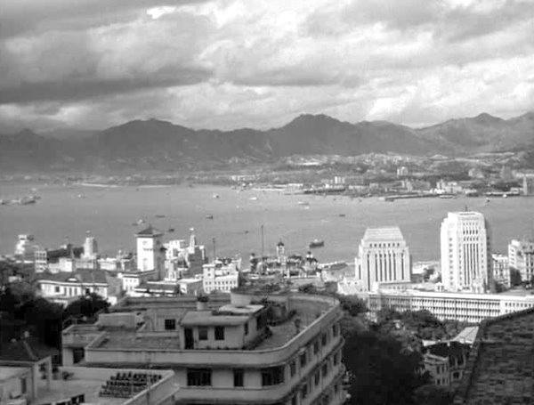
..and just for the sake of completeness,
DANGER MAN:
The
Honeymooners (Charles Frend: 1960)
MGM-British Studios Reception, Borehamwood – Ted and Joan Baker’s
wedding photograph.
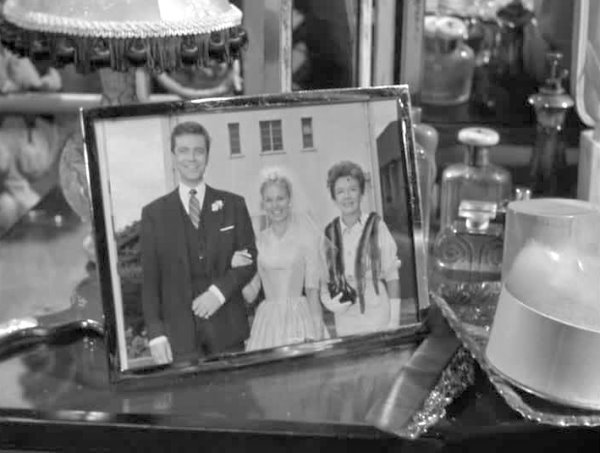
10th October – Paul Stroud has provided more detail for John Drake’s journey in DANGER MAN: Name, Date and Place.
DANGER MAN:
Name, Date and Place
(Charles Frend: 1959)
Shepherd's Bush Green, W12 - Shepherd's
Bush Green - John Drake (Patrick
McGoohan) climbs up to the top
deck of the bus whaich he has been told to board..
DANGER MAN:
Name, Date and Place
(Charles Frend: 1959)
Warlpe Way W3 - Warple
Way - .John Drake (Patrick McGoohan) leaves the bus
and walks towards
the spot where he has been told to leave the money.
DANGER MAN:
Name, Date and Place
(Charles Frend: 1959)
Stanley Gardens, W3 - Stanley
Gardens – John Drake (Patrick McGoohan) walks away
from where he
left the money, but turns to look as workers leave the factory.
DANGER MAN:
Name, Date and Place
(Charles Frend: 1959)
Pont Alexandre III, Paris, France – John Drake arrives in Paris on
Bastille Day.
9th October – Another good news from Paul Stroud who has found this obscure location in Geneva.
DANGER MAN:
The Man Who Wouldn’t
Talk (Michael Truman:
September 1965)
Hotel Richemond, Rue
Adhémar-Fabri,
Geneva, Switzerland – Drakes Hotel in Sofia.
25th September – A brace of finds from Paul Stroud from the DANGER MAN episode To Our Best Friend.
DANGER MAN:To Our Best Friend
(Patrick McGoohan: August 1965)
Haider Khanna Mosque, Rashid Street, Baghdad, Iraq - Drake tells Bill
Vincent
of his plans to raid Edihn's office.
DANGER MAN:To Our Best Friend
(Patrick McGoohan: August 1965)
The Asefeya Mosque from Shuhada bridge, Baghdad, Iraq - Leslie cuts
through
Natalie's boutique to take a message to Ivan.

18th September – A very inportant find just sent in by Paul Stroud. This stock footage is used in many productions, we knew it was Geneva, but despite many hours on StreetView we had drawn a blank. Today Paul has found it. Well done Paul!
3, Route de Florissant, Geneva, Switzerland – current StreetView photo
DANGER MAN:
Are You Going to be
More Permanent? (Don Chaffey:
1964)
3, Route de
Florissant, Geneva, Switzerland
- Drake arranges to meet with Josef Laclos at the Geneva’s Natural
History Museum.

THE PROTECTORS:
The Quick Brown Fox
(Don Chaffey: Summer 1971)
3,
Route de Florissant, Geneva,
Switzerland - The bank in Geneva where Keller’s
agent is to pick
up some more funds.
JASON KING:
A Red Red Rose For Ever
(Cyril Frankel: 1971)
3, Route de
Florissant, Geneva, Switzerland
-

DANGER MAN:
I’m Afraid You Have
the Wrong Number
(George Pollock: 1965)
3, Route de
Florissant, Geneva, Switzerland
- The apartment of Aurel, the second member of Standfast’s network
contacted
by Drake.
Paul has also spotted these locations recntly.
DANGER MAN:
Are You Going to be
More Permanent? (Don Chaffey:
1964)
Geneva Airport,
Route de l'Aéroport, Le
Grand-Saconnex, Switzerland – The trunk with
Vladimir inside
arrives at the airport.

DANGER MAN:
The Contessa
(Terry Bishop: 1961)
Shad Thames, SE1
– In New York
there is a tragic accident when a longshoreman is crucshed at the docks
by a
falling load.

DANGER MAN:
The Contessa
(Terry Bishop: 1961)
Junction of New
Bond Street and Dering
Street, NW1 - Drake makes his way around the side
of the building to
steal the sailor’s coat
DANGER MAN:
The Contessa (Terry
Bishop: 1961)
Longchamp Racecourse,
Route des Tribunes, Paris,
France – Drake goes in search of The Contessa
Scarafino at varous
locations including the races.
DANGER MAN:
The Contessa (Terry
Bishop: 1961)
New York, USA
– The episode opens with
an accident at the port (establishing shot centred on The Paramount
Building,
Times Square).
DANGER MAN:
The Contessa
Terry Bishop: 1961)
Manorbier Bay,
Manorbier, Pembrokeshire, Wales
- Drake is driven to the Contessa's home (picture reversed,see The Brothers).

16th August – Paul Stroud – rough notes.
DANGER MAN:
A Very Dangerous Game (Don
Chaffey: April 1965)
Hong Kong Harbour (5:54) - View of Singapore

DANGER MAN:
A Very Dangerous Game (Don
Chaffey: April 1965)
Peninsula Hotel, Salisbury Road, Hong Kong - Drake’s Singapore hotel
Victoria Theatre, Singapore (11:32) Seen from St. Andrew’s Road.
St. Andrew’s Road by St. Andrew’s Cathederal (unseen to right of shot).
Two businesses at 22:00, both in Singapore:
Bee Chow Tailor, 21 Chulia Street, probably inconclusive
No address for Chung Nan Hung & Co Ltd
Street confirmed as Singapore
DANGER MAN:
Colonel Rodriguez
(Peter Graham Scott:1961)
Gran Via de les Corts Catalanes, Barcelona, Spain - Establishing shot
of
Montique
DANGER MAN:
Colonel Rodriguez
(Peter Graham Scott:1961)
Junction of New Bond Street and Dering Street, NW1 - Colonel Rodriguez
pays an
unexpected visit to the Bernard’s appartment looking for Drake. He
looks
out of the kitchen window to see if Drake is in the street below.
DANGER MAN:
The Relaxed Informer
(Anthony Bushell: 1960)
Grand Place, Brussels, Belgium - Drake accosts Ruth as she dines at a
restaurant.
DANGER MAN:
Find and Destroy
(Charles Frend:1961)
United States Capitol Building, Washington D.C., USA - (opening shot)
Drake is
about to leave for his holiday.
DANGER MAN:
Find and Destroy
(Charles Frend:1961)
Monaco Beach (23:26)
Drake on the beach
DANGER MAN:
Sting in the Tail (Peter
Yates: April 1965)
Myrtle Bank Hotel, Kingston, Jamaica - Drake meets Noureddine at Marie
Valedon's home.
10th July – Identified by Sam Denham
JASON KING:
A Thin Band of Air (Cyril
Frankel: 1971)
Wells Rise,
London NW8 – Lee Bailey
goes to interview Irene Cuvier at her appartment in Paris. When Lee
leaves the
flat she is kidnapped and driven away.
1st July – MAN IN A SUITCASE: The Boston Square (Don Chaffey: February 1967)
Hydra, Greece - McGill is in Corfu to watch Dalby and Packard
15th June - Alan Field - DANGER MAN:
The Sanctuary
(Charles Frend: 1959)
Hyde Lane crossing
in How Wood, where How Wood Station is today and.


Auch Viaduct on the West Highland Line

13th June – Geoff Dodd – spotted BP of Butterfly Lane passing Haberdasher's School cropping up in Samurai West when Mannering and Sterling go to visit his brother at Lyndhurst
11th June - THE NEW ADVENTURES OF CHARLIE CHAN - Charlie's Highland Fling - 1957
M9: Wall Hall College, The University of Hertfordshire, Aldenham
N22: The Thatched Lodge, Green Street, Shenley
11th July – Some more great work from Paul Stroud, the last of which might surprise you!
DANGER MAN:
You’re Not In Any
Trouble, Are you? (Don
Chaffey: February 1965)
Via Vittorio Veneto,
Rome - John Drake
goes to the Michelangelo Hotel in Rome to investigate the death of Bill
Ellis.
DANGER MAN:
You’re Not In Any
Trouble, Are you? ((Don
Chaffey: February 1965)
Excelsior Hotel, Via
Vittorio Veneto as seen from
Via Ludovisin – John Drake places a personal add in
‘Il
Globo’ and the following day a copy is read at a local news stand.

DANGER MAN:
You’re Not In Any
Trouble, Are you? (Don
Chaffey: February 1965)
Albert Memorial Clock
Tower, Victoria
Street/Queen's Square, Belfast – John Drake looks
out from his
hotel room to check the time by a nearby clock tower.
(Identified by paul Stroud, June 2014)
10th June – The second THE AVENGERS find this year, and it is a major location. After many years, Oxhey Park has been identified as the location of the children’s playground seen in The See-Through and Game.
Please visit this page for the confirmation - http://oxheypark.com/history.htm.
THE AVENGERS:
The See-Through Man (Robert Asher:
November 1966)
L13: Oxhey Park, Watford
- Steed (Patrick Macnee)
arrives in
his Bentley to talk to Ackroyd
(Jonathan Elsom).
THE AVENGERS:
Game (Robert Fuest: June 1968)
L13: Oxhey Park, Watford
- Merton Park
children's playground, where Steed (Patrick Macnee) and
Tara (Linda
Thorson) find the bodies of Dexter, Averman and Witney.
6th June – Pointed out be Paul Stroud, this rather obvious location missing from the guide.
DANGER MAN:
The Sanctuary
(Charles Frend: 1959)
The Forth Rail Bridge, Edinburgh
-
Drake, posing as Michael Liamond, takes a train to Glen Doon.
Also spotted where some unknows which have peen posted up on Location Spotting Page 17.
3rd June – Some more great research from Paul Stroud had revealed the identity of this location.
DANGER MAN:
Parallel Lines
Sometimes Meet (Don Caffey:
February 1965)
Frederick Street,
Port of Spain, Trinidad
– Drake reports to the World Travel offices in Port au Price.


30th May – Paul Stroud
DANGER MAN:
The Lovers (Peter
Graham Scott: 1959)
Frith Street , W1
- Drake visits
Leonido Frith Street in Soho.
29th May - Paul Stroud
DANGER MAN:
The Lovers (Peter
Graham Scott: 1959)
Park Lane , W1
- Maria's limousine is
driven from Oxford Street into Park Lane past Marble Arch. Drake orders
everybody
out of the car at Cumberland Gate with the actual gates still in place
in front
of the Odeon in the background. Back-projection of the same area but
from when
the cinema was the Regal.
23rd May – Paul Stroud
Stock footage of Southampton seen in DEPARTMENT S: A Cellar Full of Silence.
Briths Pathe - http://www.youtube.com/watch?v=1KjCPS2uR2Y
DEPARTMENT S:
A Cellar Full of
Silence (John Gilling:
June 1968).
Southampton, Hampshire - Annabelle shows Jason and Stewart footage of a
student
rag taking place in Saint John's Wood (West Bargate Street, Pound Tree
Lane).
20th May – Paul Stroud has spotted the Muhammad Ali Mosque, Cairo used once more in DANGER MAN.
DANGER MAN:
The Blue Veil
Muhammad Ali Mosque, Saladin Castle, Cairo
Establishing shot of the town of Medii
19th May – THE SENTIMENTAL AGENT pages added to the guide.

Source of frequently used Cairo footage from British Pathe found at http://youtu.be/bR2-7KPy4u4.
14th May – Paul Stroud has found one of thise locations that has evaded the best minds for years, until now.
Bussaco Palace Hotel, Estrada Florestal, Mealhada, Portugal

DANGER MAN:
A Date with Doris
(Quentin Lawrence: 1964)
Palace occupied by Patatore.
DANGER MAN:
The Affair At
Castelevara (Quentin Lawrence:
1964)
Prison at Santa Christina where Torres is held.
DANGER MAN:
Sting in the Tail
(Peter Yartes: 1964)
Two of Noureddine’s thugs arrive at assassin’s home to him know
that Marie Valedon has driven off with Drake.
10th May – Paul Stroud spotted this location in the latest book on the series AMICALEMENT VOTRE by Didier Liardet.
THE
PERSUADERS! Overture (Basil
Dearden, June 1970)
Chateau Mouans-Sartoux, Mouans-Sartoux, France - A clue on a wine
bottle
inspires Brett and Danny go to Chateau Palliard to find Judge Fulton
after
witnessing his kidnap.

3rd May - More from the ever observant Paul Stroud.
DANGER MAN:
Whatever Happened to
George Foster ? (Don
Chaffey: November 1964)
Park lane, London W1
- John Drake pays
a visit to Lord Ammanford's residence (BMW Building).
(Spotted by Paul Stroud, May 2014)
DANGER MAN:
Whatever Happened to
George Foster? (Don Chaffey:
November 1964)
Bogotá, Colombia - Riots in santo Marco are observed by John Drake
(Avenida
Jimenez de Quezada aka Calle 15)
(Spotted by Paul Stroud, May 2014)

Footage from British Pate - http://youtu.be/FFIre7C9ONo
16th April –More DANGER MAN intelligence from our internationall detective, Paul Stroud.
DANGER MAN:
Bury the Dead
(Clive Donner: 1959)
Palermo, Sicilly Italy - The story opens in Sicilly.

DANGER MAN:
Deadline (Peter
Graham Scott: 1959)
Park Lane, London W1
- Drake leaves
the Dorchester Hotelby taxi for a meerting at 449 Wigmore Street.
DANGER MAN:
Deadline (Peter
Graham Scott: 1959)
Cavendish
Square/Cavendish Place/Chandos
Street, W1 - Drake travels by taxi from his hotel
to 449 Wigmore Street.

6th April – Vince Cox used his knowledge of RANDALL AND HOPKIRK [DECESED] locations to hlp identify this obscure location from DEPARTMENT S. Let us hope this clue puts us on the right track for finding the other locations in the sequence.
DEPARTMENT S:
A Cellar Full of
Silence (John Gilling: June
1968)
O6: Rowley Lane, Well End
- After losing contact
with Jason Stewart races in the Bentley to the telephone box.

4th April – Another couple of DANGER MAN finds by Paul Stroud.
DANGER MAN:
An Affair of State
(Peter Graham Scott: 1959)
Eze, France - Hartley drives Drake from the Airport in San Pablo and
discusses his
new case (Avenue de Verdun/Moyenne Corniche)
DANGER MAN:
No Marks for Servility
(Don Chaffey: 1964)
Omonoia Square, Athens
–
Establishing shot of Athens.
3rd April – From a new cotributer a fantastic first find. This is one of those locations that a lot of people have spent too much time searching for with no luck. Jon Mayers has not only found this The See-Through Man location, but sent in a magnificent set of comparison photos to confirm his find. Thanks Jon!
THE AVENGERS:
The See-Through Man
(Robert Asher: November 1966)
C27: Lilley, Luton
- Mrs Peel drives off in her
Lotus after her encounter with Eleneand Ackroyd but she is pursued by
Vazin’s Jaguar (along Hexton Road). The Jaguar slides on a corner and
comes to a stop. Mrs Peel sees that the driver of the car has no head
before he
drives away.
29th March - Another find from Paul Stroud.

DANGER MAN:
Fish on a Hook
(Robert Day: March 1964)
Khan el-Khalili, Cairo,
Egypt - John Drake
pays a visit to Twfik’s camer shop in the souk.
28th March– Geoff Dodd is on a role this month.
THE SAINT:
The Persistent Patriots
(Roy Baker: October 1966)
Inverforth House
on North End Way, NW11 - Protesters
gather outside the embassy
where Prime Minster Jack Liskard is staying in
THE SAINT:
The Persistent Patriots
(Roy Baker: October 1966)
Hamilton Terrace
NW8 turning into Marlborough Place -
Lockhart and Benson drive
through

26th March – Paul Stroud has found three new locations for the DANGER MAN episode, The Sisters
DANGER MAN:
The Sisters
(Seth Holt: 1959)
Grande Place,
Brussels, Belgium -
Opening shot, of Slavosk.
DANGER MAN:
The Sisters
(Seth Holt: 1959)
The Alcazar, Segovia,
Spain - Gerda Sandor
is held in a Slavosk prison
DANGER MAN:
The Sisters (Seth Holt:
1959)
Pentonville Prison,
Caledonian Road, N7
- Drake is sent to interview Prof. Nadia Sandor in prison
23rd March – Another great find from Geoff Dodd, who, just like me, did not expect this location to turn up in Radlett!
JOURNEY TO
THE UNKNOWN: The New People
(Peter Sasdy: 1968)
M26: The Tudor House,
junction of The Avenue and Park
Avenue, Radlett – Hank Prentiss (Robert Reed) and
Anne Prentiss
(Jennifer Hilary) move into their new home, not suspecting that Matt
Dystal(Milo O'Shea) has plans for them.
(Identified by Geoff Dodd, March 2014)

22nd March – Paul Stroud has sent in this update of DANGER MAN locations he has found recently:
DANGER MAN:
View from the Villa (Seth
Holt: 1959)
Fontana di Tritone,
Piazza
Barberini, Rome, Italy –
Rome
Café overlooking Piazza Foro Traiano, Rome, Italy – Drake goes to a café looking for information (backdrop)
DANGER MAN:
Find and Return (Seth
Holt: 1959)
Muhammad Ali Mosque,
Saladin
Castle, Cairo - Beth Ja Brin
DANGER MAN:
Time to Kill (Ralph
Smart: 1959)
Paris
- Looking past the dome of les
Invalides to the Eiffel Tower
DANGER MAN:
Under the Lake (Seth
Holt: 1959)
Prinzregentenstrasse,
Munich, Germany
- Drake and Keller watch then follow Von Klaus. (plate as used in The Key reversed).
DANGER MAN:
Galloping Major (Peter
Maxwell: July 1964)
Map of
Union Street, Harare, Zimbabwe
- This surely won't interest Avengerland, but the map shown is Harare.
Samora Machel Avenue West appears
as Union Street
DANGER MAN:
Colony Three (Don
Chaffey: July 1964)
London,
Saint Paul’s Cathedral, EC4
- Drake’s signal is being sent back to London. Frequently used shot.
DANGER MAN:
Position of Trust (Ralph
Smart: 1959)
New York,
USA - Opening shot of
Manhattan (the building in the centre is on 7th
Ave/44th
Street).

DANGER MAN: A
Man to be Trusted
(Peter Maxwell: June 1964)
Sangster
International Airport, Montego Bay,
Jamaica – John Drake arrives at Topico Bay
airport posing as a
detective Superintendent Grant. Sangster International Airport, Montego
Bay,
Jamaica
Note: The shape of the land beyond the runway looks just the same. Large lake to the south-west has been developed.

DANGER MAN:
A Date with Doris (Quentin
Lawrence: 1964)
Sangster
International Airport, Montego Bay,
Jamaica – John Drake flies into Cuba posing as
journalist John
White.
(Identified by Paul Stroud,
March 2014)
19th February – Thanks to Pierre Alfonsi for idenifying all these parisian locations from THE SAINT: The Covetous Headsman.
Please not, these are all on LS14, which was intended as a page showing all the locations from one episode known and unknown. Unfortunately a lot of these locations were never entered into the guide – this is on my ‘to do’ list.
THE SAINT:
The Covetous Headsman
(Michael Truman: 1962)
Hotel Raphael, 17
Avenue Kleber Paris/Avenue Des
Portugais - Simon escorts the grieving Valerie
North as Inspector
Quercy drives them to their hotel.
(Identified by Pierre Alfonsi, February 2014)
THE SAINT:
The Covetous Headsman
(Michael Truman: 1962)
50 Rue La Perouse
Paris – Simon
escorts the grieving Valerie North as Inspector Quercy drives them to
their
hotel.
(Identified by Pierre Alfonsi, February 2014)
THE SAINT:
The Covetous Headsman
(Michael Truman: 1962)
Hotel La Perouse on
the left at the crossing
Avenue Des Portugais And Rue La Perouse Paris–
Simon escorts
the grieving Valerie North as Inspector Quercy drives them to their
hotel.
(Identified by Pierre Alfonsi, February 2014)

6th February - Paul Stroud – A lot of stock footage of Vienna that turns out to be Munich and London.
DANGER MAN: The Key (Seth Holt, 1959)
1:44 Heldenplatz,
Vienna
Vienna

1:49 Glockenspiel,
Marienplatz, Munich
Panning from the dancing figurines of the Glockenspiel to the streets
below
You
can follow the shot from ground-level here
2:01 Prinzregentenstrasse
/Von-der-Tann-Strasse, Munich
Drake is on his way to meet the Ambassador as his car is driven across
a
pedestrian crossing.
This area is featured later-on, otherwise I might never have recognised
it.
What convinced me was the very first frame of this shot which shows the
building on the left, if only the panel above the
pillars, as well as
the flags along the road which appear later.
2:09 Odeonsplatz,
Munich
Drake gets out of his car then into the Ambassador's car.
Good reproduction
of the shot here, plus Street View shows us along
the street.
2:20 Prinzregentenstrasse,
Munich
Drake's conversation with the Ambassador.
You can see this
chap on the bridge through the back window as they
begin their journey.
The limousine approaches
the Prinz-Carl-Palais. I’m hoping the building and
flags on the
right are the same as on the left of the earlier shot.
12:18 Belgrave
Square, London
As Drake is driven from the Embassy to his hotel, he is being followed
by Alex.
They pull
away against the traffic which would make sense in
Europe. As we see
them driving towards us having turned the corner I can just about make
out four
pairs of pillars on the right which would suggest the Spanish
Embassy in the southern corner. We even get to see
a pillar box from
the back of Drake’s car (western corner?).
27th January – Pierre Alfonsi – Precise geolocations for these two shots. Also the Street View images for this road aree a lot better now and show how little the area has changed.
THE
PERSUADERS!: Five Miles to Midnight
(Val Guest: 1970)
While Danny drives the Citroen with Sidonie and Frank Rocco aboard
through
Italy to their meeting place Sidonietakes photos of Danny
3917 Route du Mont-Chauve, Provence-Alpes-Côte d'Azur, France

2775 Route du Mont-Chauve, Provence-Alpes-Côte d'Azur, France

22nd January – Paul Stroud –
DANGER MAN:
Fair Exchange
(Charles Crichton: 1964)
Justizpalast, Munich
- Drake arrives in
East Berlin.

9th January – The new year statrs with a gem of a find form Paul Stroud. He manged to tie in a location he found in THE ZOO GANG to several unknown locations from DEPARTMENT S, five birds with one stone! This is the Cap Estel, 1312 Avenue Raymond Poincaré, 06360 Èze, France.
ZOO GANG: African Misfire


DEPARTMENT S: Fish out of Water
Rafic's house
DEPARTMENT S:
The Man Who Got a New
Face
Emilio Andre's mansion where he is preparing to pay the ransom.
DEPARTMENT S:
Blackout
Peacehaven, Doctor Lang’s villa in The Bahamas.


DEPARTMENT S:
Dead Men Die Twice
Alexander Lazaros’ villa, Greece. Which is being used as Lomax as a
hiding hole.